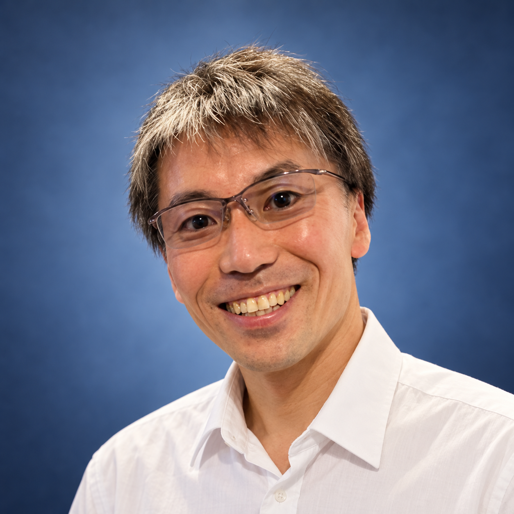

人とロボットの協調
器械出し看護師ロボットをはじめ、医療従事者の動作やワークフローに調和する手術支援を研究。
RESEARCH × CLINICAL PRACTICE × INNOVATION
医療・看護の現場から、人・ロボット・データをつなぎ、患者さんに届く価値をつくる。
東京科学大学 医療イノベーション機構
医療デザイン室 特任准教授
01 / PROFILE

東京女子医科大学、米国Brigham and Women’s Hospital、日立製作所での経験を経て、東京科学大学へ。臨床現場に根ざした研究開発と、企業での製品化経験を組み合わせ、医療技術を現場に届けるための研究と産学連携に取り組んでいます。手術支援から看護、病院運営、患者さんに寄り添うソリューションまで、医療の課題を広く捉えています。
日立製作所では、2つの医療関連製品の上市に携わり、新規事業開発、戦略立案、プロジェクトマネジメントを経験。技術の実現性と事業の持続性をともに考え、研究開発から社会実装までを見通す視点を培ってきました。
企業の研究開発に、臨床と事業の視点を。医療分野への技術応用、開発テーマの整理、事業化を見据えた研究開発の進め方も、ともに考えます。
大学研究者プロフィール ↗02 / RESEARCH FOCUS
臨床現場の問いから出発し、使われる技術へと育てる。
器械出し看護師ロボットをはじめ、医療従事者の動作やワークフローに調和する手術支援を研究。
医療機器とデータの連携を通じて、診療の意思決定や、医療・看護チームの協働を支える仕組みを研究。
手術室データクルージング、手術工程解析、パフォーマンス評価を通じて、現場の経験を可視化する。
看護業務の流れや人とロボットの役割分担に着目し、看護職が力を発揮できる環境や支援技術を研究。
現場の業務や資源の使われ方をデータで捉え、医療の質と病院経営・運営の改善をつなぐ研究に取り組む。
患者さんの体験や困りごとを出発点に、医療を受ける人に寄り添う機器・サービスのあり方を研究。
03 / EXPERIENCE
TOKYO · BOSTON · INDUSTRY · ACADEMIA
医療イノベーション機構 医療デザイン室 · 特任准教授
技術顧問 · 技術と事業をつなぐ研究開発
先端生命医科学研究所 · 先端工学外科学分野（FATS）
Senior Engineer · 医療技術の研究開発・事業化
Research Associate · Boston, USA（東京女子医科大学在籍中）
臨床現場に根ざした医工学研究
04 / SELECTED PUBLICATIONS
International Journal of Computer Assisted Radiology and Surgery · 20, 1975–1985
器械交換時の自動挿入機能を備えた、第3世代の器械出し看護師ロボット。
Advanced Robotics · 38(24), 1758–1769
医療施設での患者案内ロボットの試行と、患者・病院職員への調査を通じ、移動に関わる業務を支える可能性を検討。
Neurologia medico-chirurgica · 63(7), 295–303
深層学習を用い、術中の脳変形を補正する画像誘導手術の研究。
05 / 企業・医療機関の皆さまへ
臨床現場での研究開発と、企業での製品上市。その両方の経験をもとに、技術の可能性を医療の現場へつなぐ接点を探ります。
連携・講演テーマの例
RESEARCH COLLABORATION
技術シーズと臨床ニーズの接点から、研究の問いを一緒に考えます。
TALKS & SEMINARS
研究と製品化をつなぐ視点を、企業の研究開発・事業開発チームや医療従事者の皆さまへ。
技術シーズと臨床ニーズの接点を整理し、医工連携による研究開発テーマや、事業化に向けて検討すべき課題を一緒に考えます。
看護・診療のワークフローや資源の使われ方を捉え、現場の負担と医療の質に配慮した研究の問いを整理します。
医療機器イノベーション、医療ロボット、臨床ニーズを起点とする研究開発など、対象者や目的に合わせて講演・セミナーのテーマをご相談いただけます。
「この技術は医療に活かせるか」「臨床現場の視点を研究開発に取り入れたい」——具体的な共同研究テーマになる前の段階から、ご相談ください。
06 / CONNECT
手術支援、看護業務の支援、病院運営の改善、患者さんに寄り添うソリューション。医工連携・共同研究、事業開発や社会実装、講演のご相談は、専用フォームからお気軽にお寄せください。
医工連携・講演を相談する ↗Microsoft Forms · ログイン不要
ELSEWHERE / VERIFIED PROFILES